A Framework for Literal Based Classification

| sepall | sepalw | petall | petalw | Class |
|---|---|---|---|---|
| 5.1 | 3.5 | 1.4 | 0.2 | Setosa |
| 7.0 | 3.2 | 4.7 | 1.4 | Versicolor |
| 6.3 | 3.3 | 6.0 | 2.5 | Virginica |
| … | … | … | … | … |
true or false| wseto | wvers | wvirg | Condition |
|---|---|---|---|
| 1.00 | 0.00 | 0.00 | None below fulfilled |
| 0.00 | 2.31 | 1.39 | petal width ∈ [1.4;1.6] |
| 0.00 | 5.56 | 0.00 | sepal width ∈ [2.0;3.0] ∧ petal width ∈ [0.4;1.3] |
| 0.00 | 0.00 | 7.00 | petal length ∈ [5.2;6.9] |
| 0.00 | 0.00 | 7.00 | petal width ∈ [1.9;2.5] |
var onePlusOneEA = new EvolutionaryAlgorithm
{
FitnessFunction = new OneMax(),
SearchSpace = new BitString(),
AlgorithmGraph = new OnePlusOneEAGraph()
};
onePlusOneEA.Initialization = new RandomInitialization(onePlusOneEA);
onePlusOneEA.StoppingCriteria =
[
new GenerationStoppingCriterion(onePlusOneEA)
];
await onePlusOneEA.Run();public class OnePlusOneEAGraph : OperatorGraph
{
public OnePlusOneEAGraph()
{
Start = new Start();
Finish = new Finish();
var mutation = new StandardMutation();
var selection = new CutSelection();
Start.AddChildren(mutation, selection);
mutation.AddChildren(selection);
selection.AddChildren(Finish);
}
}% dotnet test --filter "Name=TestOnePlusOneEA"
Gen | Fit | Genotype
--- | --- | ----------------------------------------------------------------
1 | 26 | 0011001000011010000100100110100110000000010001001011101110010111
2 | 26 | 0011001000011010000100100110100110000000010001001011101110010111
3 | 26 | 0011001000011010000100100110100110000000010001101011101010010111
4 | 26 | 0011001000011010000100100110100110000000010001101011101010010111
5 | 28 | 0011001000011010000100100110100110000100010001101011101110010111
...